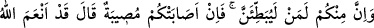
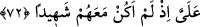

laf anlamıyorlar!
79- Sana gelen iyilik Allah’tandır. Başına gelen kötülük ise nefsindendir. Seni
insanlara elçi gönderdik; şahit olarak da Allah yeter.
80- Kim Rasûl’e itâat ederse Allah’a itâat etmiş olur. Yüz çevirene gelince, seni
onların başına bekçi göndermedik!
81- «Baş üstüne» derler, ama yanından ayrılınca onlardan bir kısmı, senin
dediğinden başkasını gizlice kurar. Allah da onların gizlice kurduklarını yazar. Sen
onlara aldırma ve Allah’a dayan; sana vekil olarak Allah yeter.
82- Kur’ân’ı gereği gibi düşünmüyorlar mı? Eğer o, Allah’tan başkası tarafından
gelmiş olsaydı onda birçok tutarsızlık bulurlardı.
83- Onlara güven veya korkuya dair bir haber gelince hemen onu yayarlar,
halbuki onu, Rasûl’e ve aralarında yetki sâhibi kimselere götürselerdi, onların
arasından işin içyüzünü anlayanlar, onun ne olduğunu bilirlerdi. Allah’ın size lütuf
ve rahmeti olmasaydı, pek azınız müstesnâ, şeytana uyup giderdiniz.
84- Artık Allah yolunda savaş. Sen yalnız kendinden sorumlusun. Mü’minleri de
teşvik et. Umulur ki Allah kâfirlerin gücünü kırar (güçleriyle size zarar vermelerini
önler). Allah’ın gücü daha çetin ve cezâsı daha şiddetlidir.
“Ey îman edenler! Tedbîrinizi alın” Yâni düşmana karşı uyanık olup korunun ki, size
galip gelmelerine imkan vermeyin.
“Bölük bölük savaşa çıkın”, ayrı gruplar halinde bir seriyyeden sonra başka bir
seriyye ile çeşitli yerlere düşmanla cihâda çıkın. Bu durum, Hz. Peygamber (a.s) savaşa
gitmediğinde sözkonusu olur. “Bölük bölük” mânâsına gelen “sübât” kelimesi, ondan
fazla erkekden meydana gelen topluluk demektir. “Yâhut topyekün” tek bir parça olarak
topluca “savaşa gidin.” Birbirinizi yüzüstü bırakıp da kendi canınızı tehlikeye atmayın.
Bu durum da, Hz. Peygamber (a.s) savaşa gittiğinde söz konusu olur.
72- İçinizden bazıları vardır ki (cihad konusunda) pek ağırdan alırlar. Eğer size
bir felâket erişirse: «Allah bana lütfetti de onlarla beraber bulunmadım» der.
“İçinizden bazıları vardır ki” Bu hitap mü’min olsun münâfık olsun Rasûlullah
(s.a.v)’in bütün ordusunadır. Savaşa çıkmamak için “pek ağırdan alırlar.” Gerektiği
kadar yavaş hareket edip ağırdan alarak geri kalırlar. Yâhut da başkalarını ağırdan
aldırarak cihaddan alıkoyarlar. Bu, münâfık Abdullah b. Übeyy’in adeti idi. Uhud
Savaşı’nda insanları savaştan vazgeçiren de oydu. Birinci mânâ, yâni kendisi ağırdan